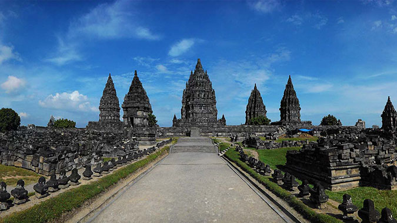
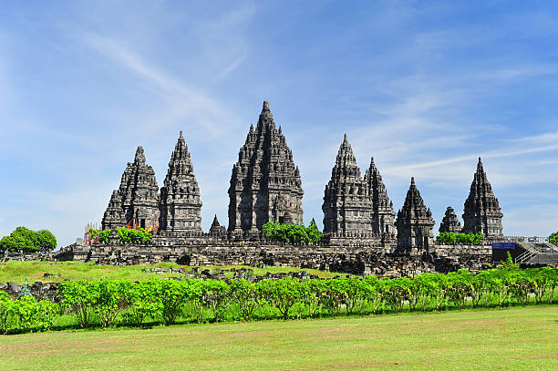
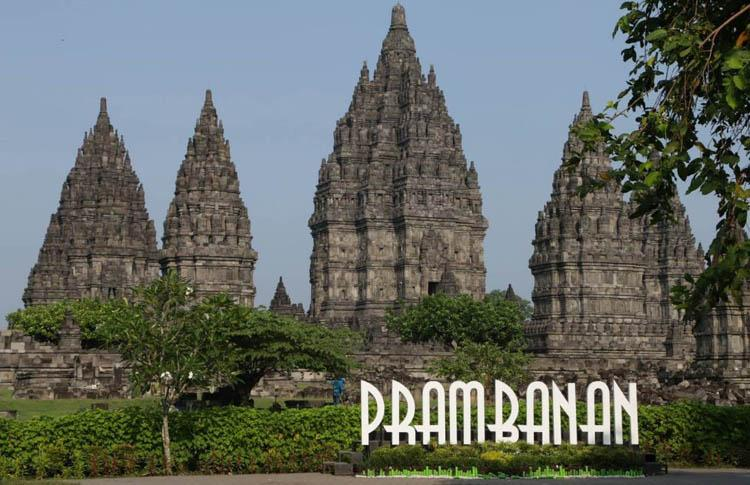
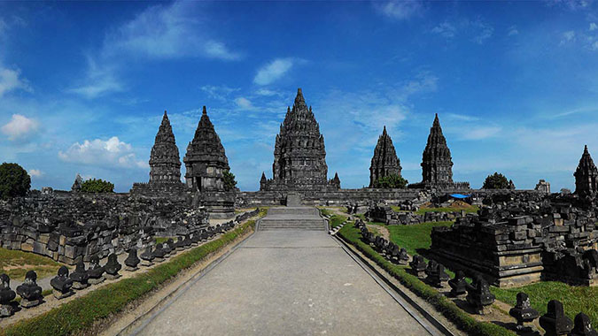
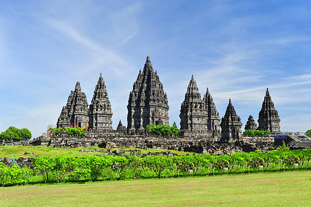
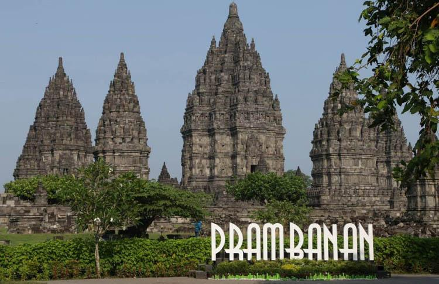
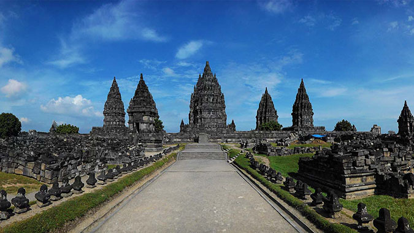
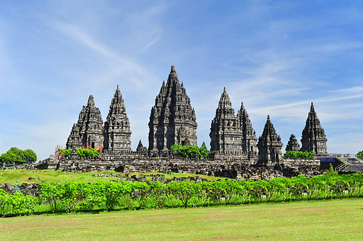
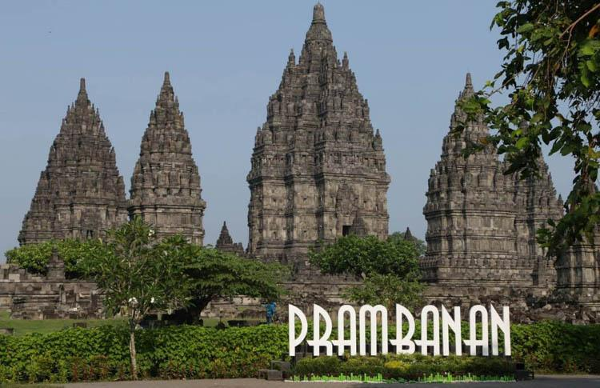

Candi Prambanan atau Candi Roro Jonggrang (bahasa Jawa: ꦕꦤ꧀ꦝꦶꦥꦿꦩ꧀ꦧꦤꦤ꧀, translit. Candhi Prambanan) adalah kompleks candi Hindu (Syaiwa) terbesar di Indonesia yang dibangun pada abad ke-9 masehi. Candi ini dipersembahkan untuk Trimurti, tiga dewa utama Hindu yaitu dewa Brahma sebagai dewa pencipta, dewa Wisnu sebagai dewa pemelihara, dan dewa Siwa sebagai dewa pemusnah. Berdasarkan prasasti Siwagrha nama asli kompleks candi ini adalah Siwagrha (bahasa Sanskerta yang bermakna 'Rumah Siwa'), dan memang di garbagriha (ruang utama) candi ini bersemayam arca Siwa Mahadewa setinggi tiga meter, dikarenakan aliran Syaiwa yang mengutamakan pemujaan dewa Siwa di candi ini.
Kompleks percandian Candi Prambanan secara keseluruhan berada di wilayah provinsi Daerah Istimewa Yogyakarta, namun pintu administrasinya berada di Jawa Tengah, hal ini yang membuat Candi Prambanan terletak di 2 tempat yakni di kelurahan Bokoharjo, kapanéwon Prambanan, kabupaten Sleman, Daerah Istimewa Yogyakarta, dan di desa Tlogo, kecamatan Prambanan, kabupaten Klaten, Jawa Tengah, atau kurang lebih 17 kilometer timur laut dari kota Jogja, 50 kilometer barat daya dari kota Surakarta dan 120 kilometer selatan dari kota Semarang, persis di perbatasan antara Daerah Istimewa Yogyakarta dan Jawa Tengah.
Candi ini adalah termasuk Situs Warisan Dunia UNESCO, candi Hindu terbesar di Indonesia, sekaligus salah satu candi terindah di Asia Tenggara. Arsitektur bangunan ini berbentuk tinggi dan ramping sesuai dengan arsitektur Hindu pada umumnya dengan candi Siwa sebagai candi utama memiliki ketinggian mencapai 47 meter menjulang di tengah kompleks gugusan candi-candi yang lebih kecil. Sebagai salah satu candi termegah di Asia Tenggara, candi Prambanan menjadi daya tarik kunjungan wisatawan dari seluruh dunia.
Menurut prasasti Siwagrha, candi ini mulai dibangun pada sekitar tahun 850 masehi oleh Rakai Pikatan, dan terus dikembangkan dan diperluas oleh Balitung Maha Sambu, pada masa kerajaan Medang Mataram.
Nama Prambanan, berasal dari nama desa tempat candi ini berdiri, diduga merupakan perubahan nama dialek bahasa Jawa dari istilah teologi Hindu Para Brahman yang bermakna "Brahman Agung" yaitu Brahman atau realitas abadi tertinggi dan teragung yang tak dapat digambarkan, yang kerap disamakan dengan konsep Tuhan dalam agama Hindu. Pendapat lain menganggap Para Brahman mungkin merujuk kepada masa jaya candi ini yang dahulu dipenuhi oleh para brahmana. Pendapat lain mengajukan anggapan bahwa nama "Prambanan" berasal dari akar kata mban dalam Bahasa Jawa yang bermakna menanggung atau memikul tugas, merujuk kepada para dewa Hindu yang mengemban tugas menata dan menjalankan keselarasan jagat.
Nama lain dari Prambanan dapat berarti 5 (lima) gunung yang dalam bahasa Khmer/Kamboja 5 (lima) adalah Pram dan banam adalah gunung (ប្រាំភ្នំ). Hal ini menggambarkan 5 puncak gunung dari Himalaya di India. Mengingat pada saat yang sama dalam kronik Khmer bahwa Bangsa Jawa pernah menjajah Khmer selama 200 tahun dan Jayawarman ke 2 yang pernah di Jawa merupakan pahlawan yang membebaskan Khmer dari dominasi Jawa.
Jam Buka Candi Prambanan Dikutip dari laman Antara, ada penyesuaian jam buka terbaru untuk para wisatawan Candi Prambanan selama masa pandemi. Yang pertama adalah Pruputan Prambanan yang diluar jam kunjung reguler yaitu pukul 06.30-08.00 WIB. Sementara jam kunjung reguler wisatawan berlangsung dari pukul 08.00-17.00 WIB. Adapun hari operasional menentukan kebijakan pemerintah untuk waktu-waktu yang diperbolehkan terutama di saat libur hari besar yang diinformasikan secara berkala.
Tiket Masuk Candi Prambanan Berikut adalah tarif per orang untuk sekali masuk kawasan Candi Prambanan:
Wisata Perorangan
- Dewasa : Rp 50.000
- Anak (usia 3 s/d 10 tahun) : Rp 25.000
- Batita (di bawah usia 3 tahun) : gratis
Wisata Rombongan Pelajar dan Mahasiswa (dengan surat pengantar dari sekolah/universitas, minimal 20 orang)
- TWC Prambanan : Rp 25.000
- Paket TWC Prambanan, Plaosan, dan Sojiwan: Rp 30.000
Lokasi Candi Prambanan Candi Prambanan berada di Kranggan, Bokoharjo, Kecamatan Prambanan, Kabupaten Sleman, Daerah Istimewa Yogyakarta. Jika diamati, secara geografis candi ini masih berada di kaki gunung Merapi. Untuk mengaksesnya Anda bisa menggunakan kendaraan umum Transjogja yang menyediakan trayek dengan rute menuju terminal Prambanan. Selain itu, Anda juga bisa menggunakan kereta lokal atau KRL sesuai jadwal. Namun jika memilih menggunakan kendaraan pribadi dari arah Solo dan juga arah Yogyakarta, Anda bisa mengikuti rute di Google Map.


